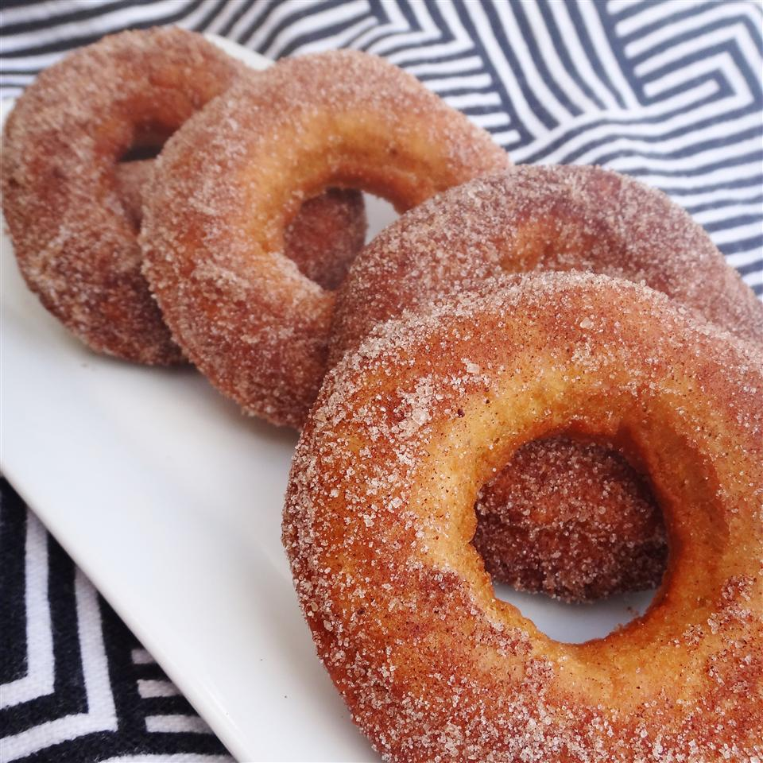

Plain Cake Doughnuts

Description
A simple cake doughnut lightly spiced with cinnamon and nutmeg.
Coat with cinnamon-sugar, or a confectioners' sugar glaze.
(Source: allrecipes.com)
Ingredients
- 2 cups all-purpose flour
- ½ cup white sugar
- 1 teaspoon salt
- 1 tablespoon baking powder
- ¼ teaspoon ground cinnamon
- 1 dash ground nutmeg
- 2 tablespoons melted butter
- ½ cup milk
- 1 egg, beaten
- 1 quart oil for frying
Steps
- Heat oil in deep-fryer to 375 degrees F (190 degrees C).
- In a large bowl, sift together flour, sugar, salt, baking powder, cinnamon and nutmeg.
Mix in butter until crumbly. Stir in milk and egg until smooth.
Knead lightly, then turn out onto a lightly floured surface. Roll or pat to 1/4 inch thickness.
Cut with a doughnut cutter, or use two round biscuit cutters of different sizes.
- Carefully drop doughnuts into hot oil, a few at a time.
Do not overcrowd pan or oil may overflow. Fry, turning once, for 3 minutes or until golden.
Drain on paper towels.
Home